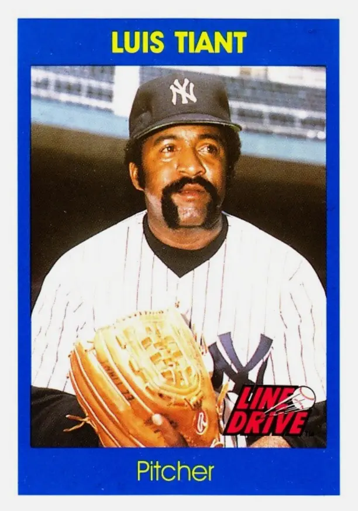

Luis Tiant "El Tiante"
Career Highlights & Facts
(Facts are AI-generated and may require verification)
- Won two American League ERA titles, including a 1.60 ERA in 1968.
- Father, Luis Tiant Sr., was a star left-handed pitcher in the Negro Leagues.
- Threw two complete-game victories, including a shutout, in the 1975 World Series.
Would you like to find out more about Luis Tiant?
Career Totals
| WAR | W | L | ERA | G | GS | SV | IP | SO | WHIP |
|---|---|---|---|---|---|---|---|---|---|
| 66.1 | 229 | 172 | 3.30 | 573 | 484 | 15 | 3486.1 | 2416 | 1.199 |
Statistics via Baseball-Reference.com
The Original Clue